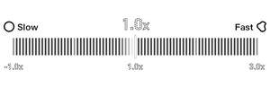

Trade Mark Journal No.2025/034 22 August 2025
UK00004246027 7 August 2025 (9,41,44)

The mark does not claim protection for the elements in broken lines of the representation, which are visually disclaimed, namely numbers "1.0," "-1.0" and "3.0," as well as the letter "x next to each number"
International priority date claimed: 2 May 2025
(Mauritius)
(MU/M/2025/41651)
- Class 9
- Downloadable software in the nature of a mobile application for gathering, organizing, and displaying physiological metrics and user input data; Downloadable software in the nature of a mobile application for providing data analytics based on physiological metrics and user input data; Downloadable software in the nature of a mobile application for providing assessment services for physical fitness, exercise, sports training, strength training, stress management, sleep, health, wellness, and physical and emotional wellbeing; Downloadable software in the nature of a mobile application for providing coaching in the fields of physical fitness, exercise, sports training, strength training, stress management, sleep, health, wellness, and physical and emotional wellbeing using physiological metrics and user input data including heart rate, respiratory rate, blood oxygen level, ECG, and skin temperature collected from the individual; Downloadable software in the nature of a mobile application for providing coaching and training information in the fields of physical fitness, exercise, sports training, stress management, sleep, health, wellness, and physical and emotional wellbeing related to physiological metrics and user input data including heart rate, respiratory rate, blood oxygen level, ECG, and skin temperature collected from the individual.
- Class 41
- Physical fitness assessment services for sports training purposes; Physical fitness training services; Physical fitness instruction; Providing fitness instruction services in the field of physical fitness, health and wellness; Personal coaching services in the field of physical fitness, health and wellness provided via a downloadable mobile application; Educational services, namely, providing classes in the field of health and nutrition.
- Class 44
- Providing information in the fields of health and wellness; Providing information, news and commentary in the field of nutrition, health and wellness; Providing wellness services, namely, personal assessments, personalized routines, maintenance schedules, and counseling; Health assessment services; Health assessment services in the nature of body composition analysis; Physical fitness assessment services for medical purposes; Health care services in the nature of athletic training.
Whoop, Inc.
Representative: Morgan, Lewis & Bockius UK LLP